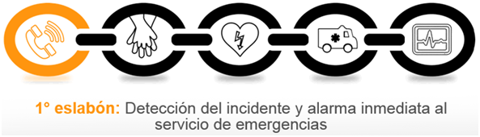
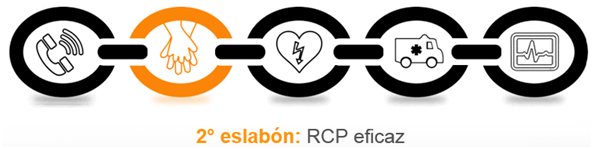
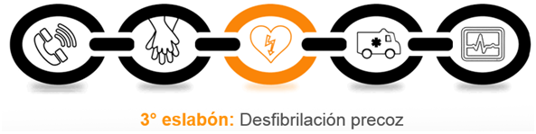
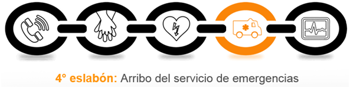
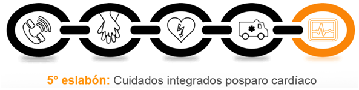

APTO FITNESS PRESENTA A CARDIONET Y SU RED DE CARDIOPROTECCIÓN (R.C.P).
Cardionet Protect consiste en un sistema de vinculación de Datos, Instrumentos, Herramientas y Otros Recursos tanto Materiales como Humanos, relacionados con distintos Servicios Médicos, que en su conjunto afrontan e intentan dar solución a un problema, ante la presentación de distintos factores que se constituyen como una amenaza o un riesgo para la salud cardiovascular de las personas que se encuentran contenidas dentro del mencionado sistema.
Mediante la interconección en red de las distintas partes que se describen como constituyentes del Sistema Cardionet, se obtiene una muy favorable optimización de los distintos recursos mencionados. Se obtiene un gran aprendizaje, crecimiento, conocimiento de las realidades actuales, concientización, trabajo en equipo, aprovechamiento y potenciación de los factores positivos, aprendizaje y corrección de los factores negativos, celeridad y pericia en la reacción, metodización del accionar, contención, capacitacion. Logrando como resultado un abordaje integral sobre la Prevención, Promoción y Protección de la Salud Cardiovascular.
El sistema Cardionet se halla incorporado en los pasos del Programa DAF Trend como parte del proceso de Screening Diagnóstico, y en formato de instructivo de Capacitación Virtual y Capacitación Presencial, en relación a las maniobras de Resucitación Cardio Pulmonar, y desempeño integral en una Situación de Emergencia. Esto permite profundizar y capacitar de manera seria y eficiente a todo individuo integrante de una y cada población abordada, en relación a cómo poder ser ese socorrista y cómo estar capacitado para poder interpretar, utilizar y aprovechar el Código QRE del eventual individuo que se encuentre en una situación de riesgo de vida por un evento cardiovascular, y ser esa única chance y no fallar en el intento, o al menos de dar es oportinidad.
Capacítese, forme parte de la Red de CardioProtección que lleva adelante Cardionet Protect.
UN BOTÓN ANTIPÁNICO ES UN DISPOSITIVO, EL CUAL PRESENTA UN INTERRUPTOR, BOTÓN O TECLA DE S.O.S., “EL CUAL AL ACTIVARSE ENVÍA UN ALERTA” A UNA PERSONA, O ENTIDAD PREDETERMINADA. EXISTEN DISTINTOS FORMATOS DE BOTÓNES ANTIPÁNICO, PARA MÁS INFORMACIÓN PONGASE EN CONTACTO CON NOSOTROS Y CONSULTENOS.
EL DEA ES UN APARATO ELECTRÓNICO PORTÁTIL QUE DIAGNOSTICA Y TRATA UN PARO CARDOI RESPIRATORIO. EL MISMO ESTÁ PENSADO PARA SER UTILIZADO POR PERSONAL NO SANITARIO, DE TAL FORMA QUE SIGUIENDO INSTRUCCIONES, SE COLOCAN LOS ELECTRODOS AL PACIENTE, Y EL APARATO, TRAS DETERMINAR EL TIPO DE RÍTMO CARDÍACO, ACONSEJA A LOS ASISTENTES SEPARARSE PARA EMITIR LA DESCARGA ELÉCTRICA, O BIÉN, ACONSEJA CONTINUAR CON LAS COMPRESIONES TORÁCICAS.
LA CADENA DE SOBREVIDA ES UN CONJUNTO DE PROCESOS QUE, REALIZADOS EN FORMA ORDENADA, SISTEMÁTICA, Y EN EL MENOR TIEMPO POSIBLE HA DEMOSTRADO CIENTÍFICAMENTE SER LO MÁS EFICIENTE PARA AUMENTAR LA CAPACIDAD DE RECUPERO DE VIDA DE LOS PACIENTES CON MUERTE SÚBITA CARDÍACA. EN ESTA CADENA COMPUESTA POR 5 PASOS, INTERVIENEN COMO FACTORES PRIMORDIALES ESLABONES NO LIGADOS AL SISTEMA SANITARIO.





LA PUESTA EN MARCHA DE LA CADENA DE SOBREVIDA PUEDE RECUPERAR EL 65% DE LAS MUERTES SÚBITAS, Y CARDIONET PROTECT INTERVIENE DANDO SOPORTE EN TODOS LOS ESLABONES DE LA MISMA. DESDE EL MOMENTO DE LA INCORPORACIÓN DE LOS INTEGRANTES DE LA RED DE CARDIOPROTECCIÓN, AL PROGRAMA DAF TREND, CON LA GENERACIÓN DE SU DOCUMENTO MÉDICO DE EMERGENCIA QRE, Y DE SU INSTRUCCIÓN Y CAPACITACIÓN EN EL DESEMPEÑO EN MANIOBRAS DE RESUCITACIÓN Y REANIMACIÓN CARDIO PULMONAR, ASÍ COMO DE OTRAS EMERGENCIAS, SE COMIENZA A CONFORMAR LA BASE DEL SISTEMA DIESÑADO Y PROPUESTO POR CARDIONET PROTECT, LO QUE JUNTO CON LOS SISTEMAS ANTIPÁNICO, LOS DESFIBRILADORES EXTERNOS AUTOMÁTICOS QUE DISTRIBUIMOS, Y LA CAPACITACIÓN INTEGRAL QUE BRINDAMOS DESDE NUSTROS GRUPOS Y PROGRAMAS DE CAPACITACIÓN, EL MÉTODO UTILIZADO SE CONSTITUYE EN UN SÓLIDO Y COMPLETO SISTEMA EN RED PARA DAR APOYO Y SOPORTE A LA CADENA DE SOBREVIDA EN TODOS SUS ESLABONES, CON EL PRINCIPAL PROPÓSITO DE PODER ESTAR TODOS PREPARADOS PARA BRINDAR A AQUÉL INDIVIDUO EN EMERGENCIA, AL MENOS UNA CHANCE.
UN ÁMBITO, ESPACIO, O EVENTO CARDIOPROTEGIDO, ES TODO AQUEL QUE GARANTIZA TENER LOS ELEMENTOS Y PERSONAL
ENTRENADO NECESARIO PARA ASISTIR A UNA PERSONA CURSANDO UN PARO CARDIO RESPIRATORIO EN LOS PRIMEROS MINUTOS.
UN EVENTO ES UNA ACTIVIDAD NO HABITUAL, CON CONCURRENCIA MASIVA DE GENTE, DENTRO DE UN PREDIO DETERMINADO, QUE PUEDE SER ABIERTO O CERRADO, COMO SER; SEMINARIOS, CONFERENCIAS, FERIAS, EXPOSICIONES, CONCIERTOS, SHOWS, FESTEJOS EMPRESARIALES, MARATONES, EVENTOS DEPORTIVOS, ETC.
CÓMO SE LOGRA SU IMPLEMENTACIÓN:
SE EVALÚAN LOS ESPACIOS FÍSICOS, CANTIDAD DE ASISTENTES PREVISTOS, PERSONAL ESTABLE Y EN TRÁNSITO, INVITADOS, TIPO DE ACTIVIDAD, TRÁNSITO INTERNO, FORMA DE COMUNICACIÓN PARA EL PERSONAL DE SEGURIDAD, VELOCIDAD DE RESPUESTA, EMPRESA DE EMERGENCIA QUE ASISTE. SE ESTABLECEN LOS ELEMENTOS NECESARIOS: AMBULANCIA DE COBERTURA, DESFIBRILADORES DEA), BOTÓNES ANTIPÁNICO, PERSONAL CAPACITADO EN SOCORRISMO PARA UTILIZAR LOS DEA Y REALIZAR LAS MANIOBRAS DE RCP BAJO NORMAS CALIFICADAS.
ESTAR BIÉN PREPARADO PARA PODER AFRONTAR ESTAS SITUACIONES PERMITE SALVAR VIDAS. CONTAR CON PERSONAL ENTRENADO Y EQUIPAMIENTO ADECUADO, Y ANTE UN PARO CARDIORESPIRATORIO, ESTAR ORGANIZADO, Y EQUIPADO COMO PARA ACTUAR Y DAR RESPUESTA EN POCOS MINUTOS, NO SOLO POSICIONA A SU INSTITUCIÓN O EVENTO CON LOS MÁS ALTOS ESTANDARES INTERNACIONALES RESPECTO A EL NIVEL DE SEGURIDAD MÉDICA Y RESPONSABILIDAD SOCIAL. TAMBIÉN DENOTA PREOCUPACIÓN POR LAS PERSONAS QUE SE ENCUENTRAN EN EL LUGAR, HACIENDO QUE SE SIENTAN PROTEGIDAS.
EN LOS ÚLTIMOS AÑOS SE HA OBSERVADO LA IMPORTANTE EFECTIVIDAD QUE SE LOGRA A TRAVÉS DE LOS SISTEMAS DE ACTIVACIÓN DE LA CADENA DE SOBREVIDA EN LOS DENOMINADOS ESPACIOS Y ÁMBITOS CARDIOASISTIDOS O CARDIOPROTEGIDOS. LA INCORPORACIÓN DE LA METODOLOGÍA PROPUESTA POR CARDIONET PROTECT RESULTA EN UN BENEFICIOSO APROTE A LOS MENCIONADOS SISTEMAS. LOS CUALES, SEGÚN LAS ESTADÍSTICAS, PERMITEN RECUPERAR EL 65% DE LAS MUERTES SÚBITAS.
LA INCORPORACION AL PROGRAMA SERÁ MUY VALORADO POR SU COMUNIDAD POR SU RELEVANCIA EN LA VIDA COTIDIANA, Y POR LOS BENEFICOS COMUNES PARA TODOS. LOS AMBITOS QUE CUENTAN CON EL EQUIPAMIENTO NECESARIO DE DEAS, EL PERSONAL CAPACITADO EN PRÁCTICAS DE RCP Y UTILIZACIÓN DE DEA Y UN SERVICIO DE EMERGENCIAS A DISPOSICIÓN, PONE DE MANIFIESTO LA RESPONSABILIDAD SOCIAL DE LA INSTITUCIÓN, Y LA IMPORTANCIA QUE TIENE PARA LA MISMA, EL CUIDADO DE SU GENTE, EMPLEADOS, PARTICIPANTES, PROVEEDORES, Y DEL COMPROMISO SOCIAL EN GENERAL.
A QUIÉN ESTÁ DIRIGIDO EL PROGRAMA?:
EL PROGRAMA ESTÁ DIRIGIDO A EMPRESAS, INSTITUCIONES, FUNDACIONES, ENTIDADES DEPORTIVAS, ORGANIZADORES DE EVENTOS MASIVOS, INDUSTRIAS, GREMIOS, MUNICIPIOS, BARRIOS, ASOCIACIONES, CENTROS COMERCIALES, INDUSTRIA DEL TURISMO, BALNEARIOS, UNIVERSIDADES, COLEGIOS, Y UNA MUY LARGA LISTA DE POTENCIALES BENEFICIARIOS.